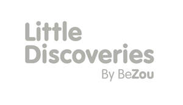

Trade Mark Journal No.2025/043 24 October 2025
UK00004277202 13 October 2025 (8,10,16,25,28)

- Class 8
- Cutlery for use by children; Cutlery for use by babies; Hair clippers for babies; Table knives, forks and spoons for babies. .
- Class 10
- Baby bottles; Baby dummies; Baby feeding dummies; Dummies [baby soothers]; Baby bottle nipples; Baby teething rings; Baby feeding pacifiers; Teething rings incorporating baby rattles; Infants' neonatal pacifiers; Incontinence sheets for use with infants; Incontinence sheets for use with babies; Infants' feeding bottles; Devices for nursing infants; Apparatus, devices and articles for nursing infants; Babies' feeding bottles; Apparatus for nursing infants; Babies' pacifiers [teats]; Baby nursers; Breast milk storage bottles; Breast pumps for use by nursing mothers; Clips for dummies; Clips for pacifiers; Covers for baby feeding bottles; Feeding bottles for babies; Teething rings for relieving teething pain.
- Class 16
- Paper baby bibs; Baby memory books.
- Class 25
- Baby bibs [not of paper]; Plastic baby bibs; Bibs, not of paper; Bibs, sleeved, not of paper.
- Class 28
- Baby rattles incorporating teething rings; Baby playthings; Baby rattles; Baby swings; Indoor play apparatus for children; Play apparatus for use in children's nurseries; Toys for infants; Infants' action crib toys; Infants' swing seats; Infants' swings; Toys for babies; Multiple activity toys for babies; Bath toys; Crib mobiles; Crib mobiles [toys]; Crib toys; Play mats containing infant toys; Bouncers [playthings]; Bouncing toys; Educational playthings; Rattles [playthings]; Rocking toys; Soft toys; Stuffed toys.
Smyths Toys HQ Unlimited Company
Representative: Smyths Toys UK Limited